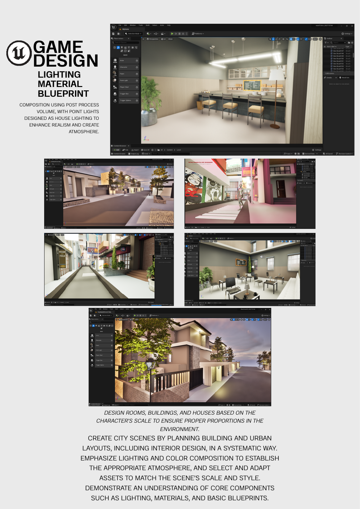
Interior Environment & Lighting Designการออกแบบสภาพแวดล้อมภายในและแสง
Architectural scale planning, material setup, and realistic lighting.การวางผังมาตราส่วนสถาปัตยกรรม การตั้งค่าวัสดุ และการจัดแสงสมจริง
Planned room layouts and urban environments scaled accurately to the character. Designed the atmosphere using Post Process Volumes and carefully positioned point lights to simulate realistic house lighting. Implemented core systems using basic Blueprints.
วางผังห้องและสภาพแวดล้อมเมืองให้ได้สัดส่วนกับตัวละคร ออกแบบบรรยากาศโดยใช้ Post Process Volumes และจัดวางจุดแสงเพื่อให้แสงสมจริงเหมือนบ้านทั่วไป รวมถึงติดตั้งระบบพื้นฐานด้วย Blueprints
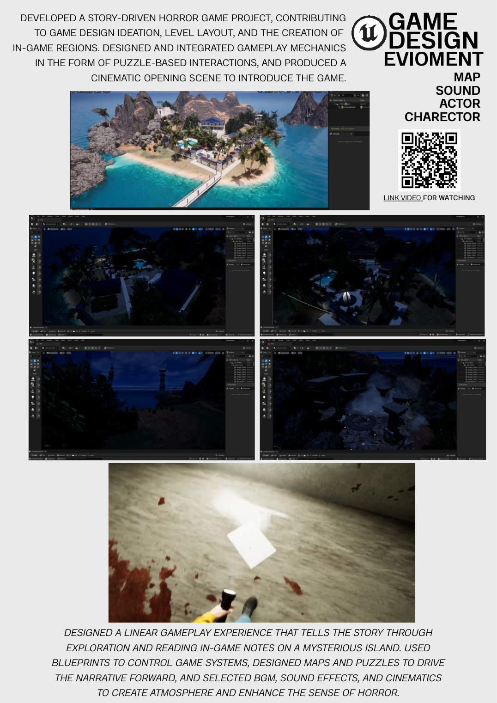
Mysterious Island — Story-Driven Horrorเกาะลึกลับ — เกมสยองขวัญเน้นเนื้อเรื่อง
Level layout, puzzle integration, and narrative pacing.การวางผังด่าน การผสานปริศนา และจังหวะการเล่าเรื่อง
Designed a linear horror experience on an island where the narrative unfolds through exploration and reading notes. Responsible for level layouts, integrating puzzle mechanics, controlling game flow via Blueprints, and directing the cinematic opening sequence.
ออกแบบประสบการณ์สยองขวัญแบบเส้นตรงบนเกาะที่เนื้อเรื่องดำเนินไปผ่านการสำรวจและการอ่านโน้ต รับผิดชอบการวางผังด่าน ใส่กลไกปริศนา ควบคุมโฟลว์เกมผ่าน Blueprints และกำกับฉากเปิดแบบซีเนมาติก
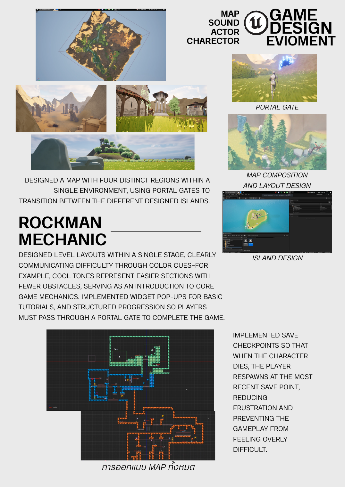
Platformer World & Level Designการออกแบบโลกและด่านเกมแพลตฟอร์ม
Difficulty progression, visual cues, and tutorial mechanics.การไล่ระดับความยาก การสื่อสารด้วยภาพ และกลไกสอนเล่น
Designed a single stage separated into four distinct regions, connected via portal gates. Used color theory to communicate difficulty (e.g., cool tones for easier introductory areas). Implemented widget pop-ups for tutorials and save checkpoints to minimize player frustration upon death.
ออกแบบด่านหนึ่งที่แบ่งออกเป็นสี่ภูมิภาค เชื่อมต่อกันผ่านพอร์ทัล ใช้ทฤษฎีสีในการสื่อสารถึงระดับความยาก (เช่น โทนสีเย็นสำหรับพื้นที่ง่ายช่วงเริ่มต้น) ติดตั้งป๊อปอัปสอนการเล่นและจุดเซฟเพื่อลดความหงุดหงิดเมื่อผู้เล่นตาย
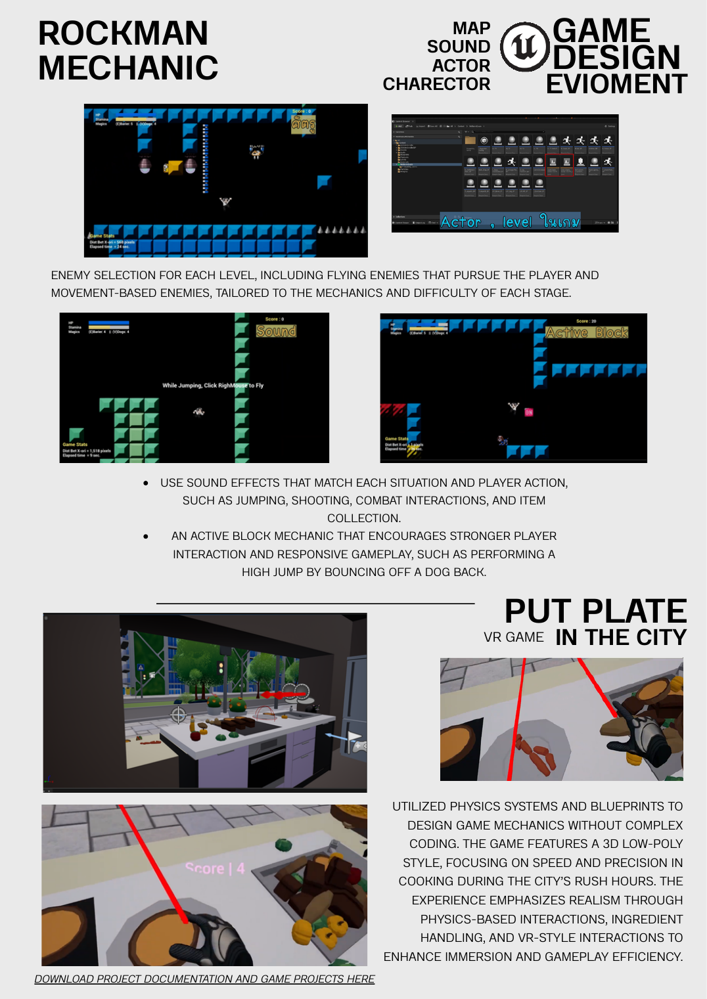
VR Cooking Game & Gameplay Mechanicsเกมทำอาหาร VR และกลไกเกมเพลย์
Physics-based interactions, enemy behavior, and audio integration.ปฏิสัมพันธ์ผ่านฟิสิกส์ พฤติกรรมศัตรู และการผสานเสียง
Developed "Put Plate in the City", a 3D low-poly VR cooking game focusing on speed during rush hour, heavily utilizing physics and Blueprints for ingredient handling. Additionally designed enemy behaviors (flying, pursuing) and an active-block mechanic for a separate platformer project.
พัฒนา "Put Plate in the City" เกม VR ทำอาหาร 3D โลว์โพลี เน้นความเร็วในช่วงเวลาเร่งด่วน ใช้ระบบฟิสิกส์และ Blueprints ในการจัดการวัตถุดิบ นอกจากนี้ยังออกแบบพฤติกรรมศัตรู (บินไล่ล่า) และกลไกบล็อกแบบโต้ตอบสำหรับโปรเจกต์เกมแพลตฟอร์ม
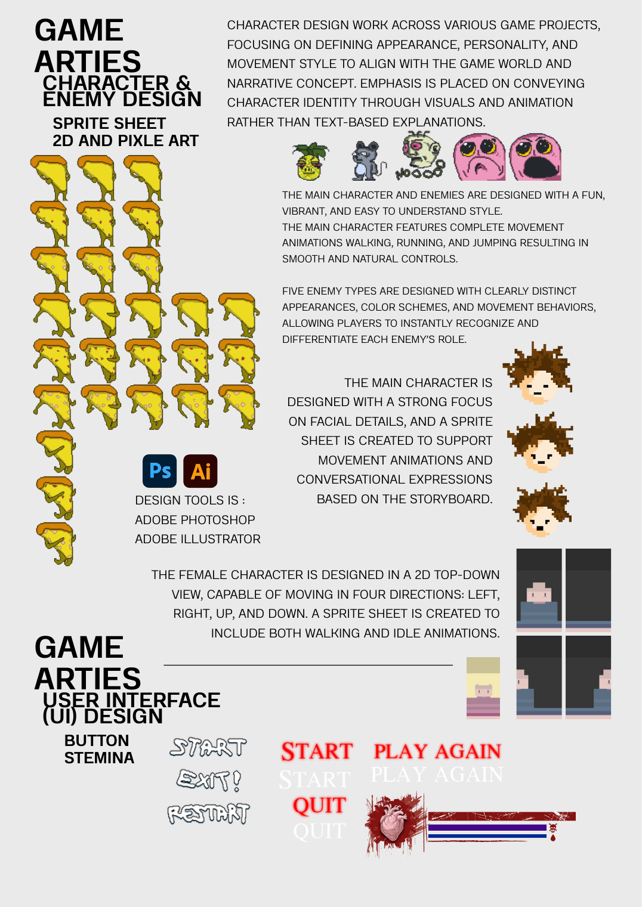
Character, Sprite & Enemy Designออกแบบตัวละคร สไปรต์ และศัตรู
Animation sheets, identity through visuals, and UI integration.สไปรต์ชีตแอนิเมชัน อัตลักษณ์ผ่านภาพ และการผสาน UI
Designed main characters and five distinct enemy types, defining appearance, personality, and movement style to fit the narrative. Created complete sprite sheets for multi-directional walking, running, jumping, and conversational expressions, alongside core UI buttons.
ออกแบบตัวละครหลักและศัตรู 5 แบบ กำหนดรูปลักษณ์ บุคลิก และสไตล์การเคลื่อนไหวให้เข้ากับเนื้อเรื่อง สร้างสไปรต์ชีตครบวงจรสำหรับการเดินหลากทิศทาง วิ่ง กระโดด และสีหน้าเวลาพูดคุย พร้อมกับออกแบบปุ่ม UI พื้นฐาน
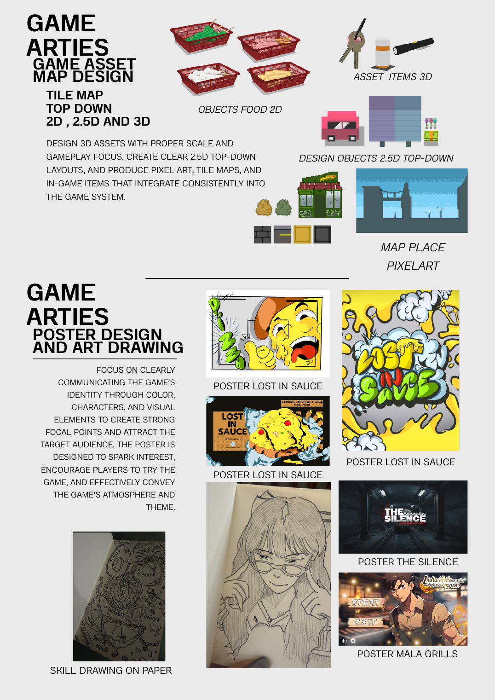
Game Assets, Map Tiles & Poster Artอาร์ตเวิร์กเกม ชิ้นงาน และแผนที่
In-game items, dimensional control, and promotional key art.ไอเทมในเกม การควบคุมมิติ และภาพโปรโมต
Produced 3D assets mapped to gameplay scale, clear 2.5D top-down tile maps, and pixel art items ensuring a consistent visual system. Illustrated hand-drawn concepts and designed promotional posters for titles like 'Lost in Sauce' and 'The Silence' to attract target audiences.
ผลิตชิ้นงาน 3D ตามสัดส่วนเกมเพลย์ ผังแผนที่ 2.5D ท็อปดาวน์ที่ดูง่าย และไอเทมพิกเซลอาร์ตที่คุมโทนระบบภาพ วาดภาพสเก็ตช์แนวคิด และออกแบบโปสเตอร์โปรโมตเกมอย่าง 'Lost in Sauce' และ 'The Silence' เพื่อดึงดูดกลุ่มเป้าหมาย
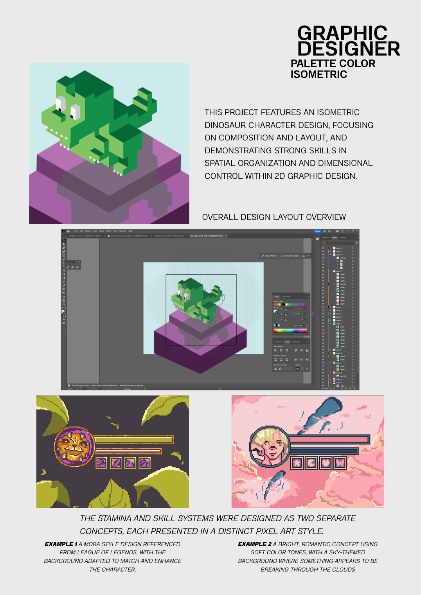
Parallax Pixel Art & Isometric Designพิกเซลอาร์ตแบบ Parallax และ Isometric
Multi-layered motion, spatial organization, and UI systems.การเคลื่อนไหวแบบหลายเลเยอร์ การจัดวางพื้นที่ และระบบ UI
Developed an isometric dinosaur character highlighting spatial organization and dimensional control in 2D space. Created a multi-layered parallax pixel art scene of Ang Kaew Reservoir. Also designed discrete stamina and skill systems presented in distinct pixel art styles.
พัฒนาตัวละครไดโนเสาร์แบบไอโซเมตริก เน้นการจัดวางมิติพื้นที่ในงาน 2D สร้างฉากพิกเซลอาร์ตอ่างแก้วแบบ Parallax หลายเลเยอร์ และออกแบบระบบแถบพลังกับสกิลในสไตล์พิกเซลอาร์ตที่ต่างกันตามโทนเกม
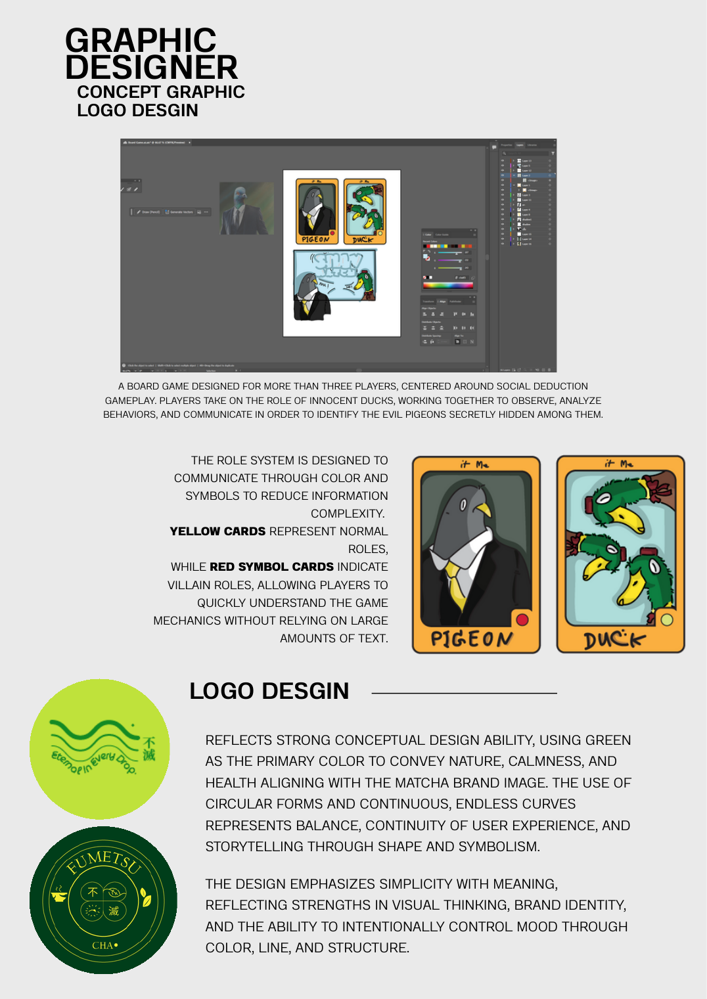
Board Game Cards & Identity Designการออกแบบการ์ดบอร์ดเกมและโลโก้
Visual rules, symbolism, and brand narrative.กฎเกณฑ์ทางภาพ สัญลักษณ์ และการเล่าเรื่องของแบรนด์
Designed a social deduction board game where role systems (Innocent Duck vs Evil Pigeon) are communicated purely through color-coded cards and symbols, minimizing text. Designed brand logos utilizing color psychology, continuous curves, and simplicity to control mood and structure.
ออกแบบการ์ดสำหรับบอร์ดเกมแนวคาดเดาบทบาท (เป็ด vs นกพิราบ) สื่อสารระบบเกมผ่านสีการ์ดและสัญลักษณ์เพื่อลดการใช้ตัวอักษร และออกแบบโลโก้แบรนด์โดยใช้จิตวิทยาของสี เส้นโค้งต่อเนื่อง และความเรียบง่ายในการคุมอารมณ์
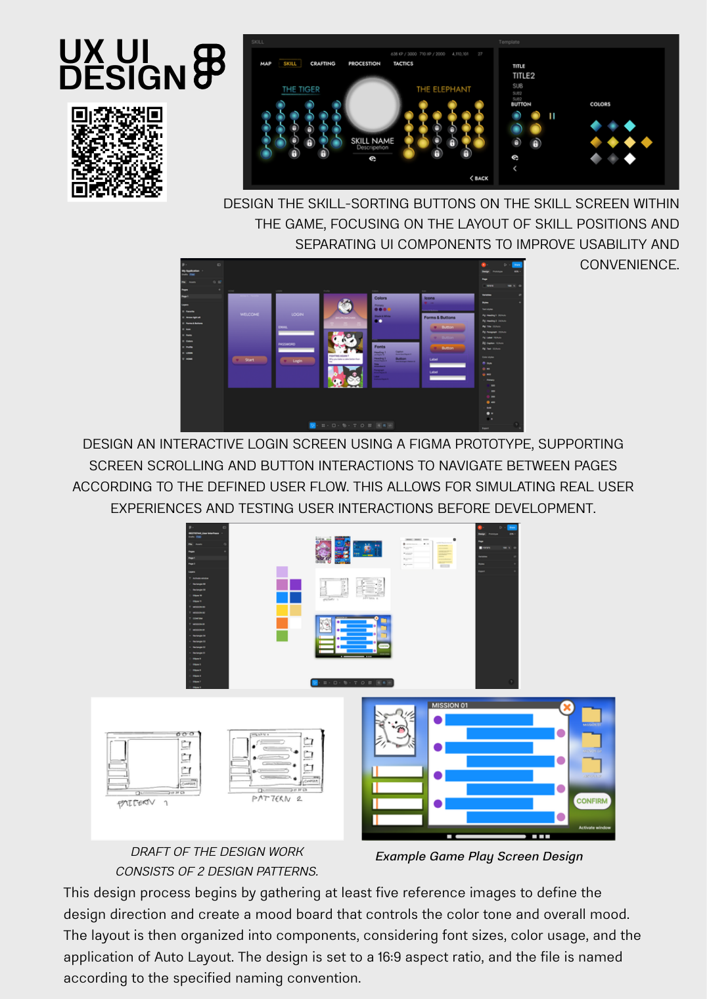
Interactive Prototyping & Skill Screen UIการทำต้นแบบ Interactive และ UI หน้าสกิล
User flows, layout components, and prototype testing.โฟลว์ผู้ใช้ องค์ประกอบการจัดวาง และการทดสอบต้นแบบ
Built an interactive login screen using Figma to simulate scrolling, button interactions, and navigation based on predefined user flows. Designed a complex skill-sorting interface within a game, focusing on the layout of skill positions and UI component separation for improved usability.
สร้างหน้าเข้าสู่ระบบแบบโต้ตอบบน Figma เพื่อจำลองการเลื่อน การกดปุ่ม และการนำทางตาม User Flow ที่กำหนด ออกแบบอินเทอร์เฟซอัปเกรดสกิลซับซ้อนในเกม เน้นการจัดวางตำแหน่งสกิลและการแยกส่วน UI เพื่อให้ใช้งานง่าย

LoverCrossy — Playable Ads UX/UILoverCrossy — UX/UI สำหรับ Playable Ads
Peak-End rule, micro-interactions, and conversion optimization.กฎ Peak-End, ไมโครอินเทอร์แอ็กชัน และการเพิ่มคอนเวอร์ชัน
Applied the Peak-End Rule to design UX/UI for a fast-paced "try-before-you-buy" playable ad. Crafted 2.5D assets, lighting cues, and fast responsive UI feedback to guide player attention and decision-making within 15 seconds, maximizing the installation rate.
ใช้กฎ Peak-End ในการออกแบบ UX/UI สำหรับโฆษณาเกมแบบเล่นได้จริง (Playable Ads) จังหวะเร็ว สร้างชิ้นงาน 2.5D แสงนำสายตา และ UI ที่ตอบสนองไวเพื่อนำทางผู้เล่นให้ตัดสินใจได้ใน 15 วินาที หวังผลเพิ่มยอดติดตั้งสูงสุด
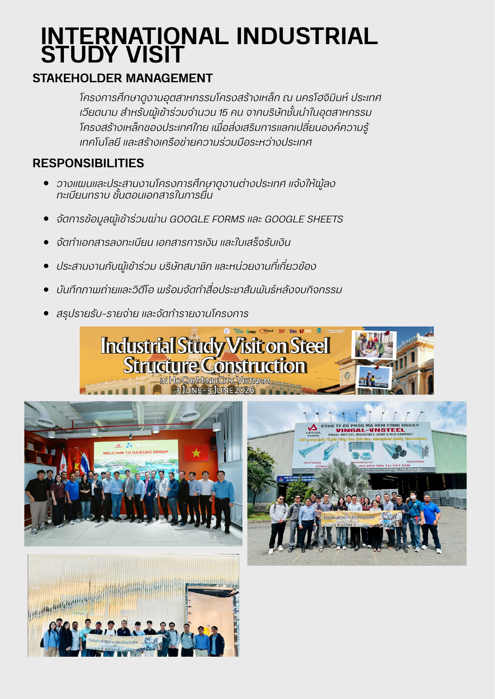
Digital Meeting Portal UXUX พอร์ทัลการประชุมดิจิทัล
Information architecture, journey simplification, and CTA layout.สถาปัตยกรรมข้อมูล การย่อขั้นตอน และเลย์เอาต์ปุ่ม CTA
Addressed the friction of scattered presentation slides and confusing file names during meetings. Designed a centralized digital portal where registration, meeting details, and real-time voting are seamlessly accessible from a single link, utilizing clear CTA buttons to guide the user journey.
แก้ปัญหาเอกสารพรีเซนเทชันกระจัดกระจายและสับสนในช่วงเวลาประชุม ออกแบบเว็บพอร์ทัลศูนย์กลางที่รวบรวมการลงทะเบียน รายละเอียด และการโหวตเรียลไทม์ไว้ในลิงก์เดียว ใช้ปุ่ม CTA ชัดเจนเพื่อนำทางผู้ใช้งาน
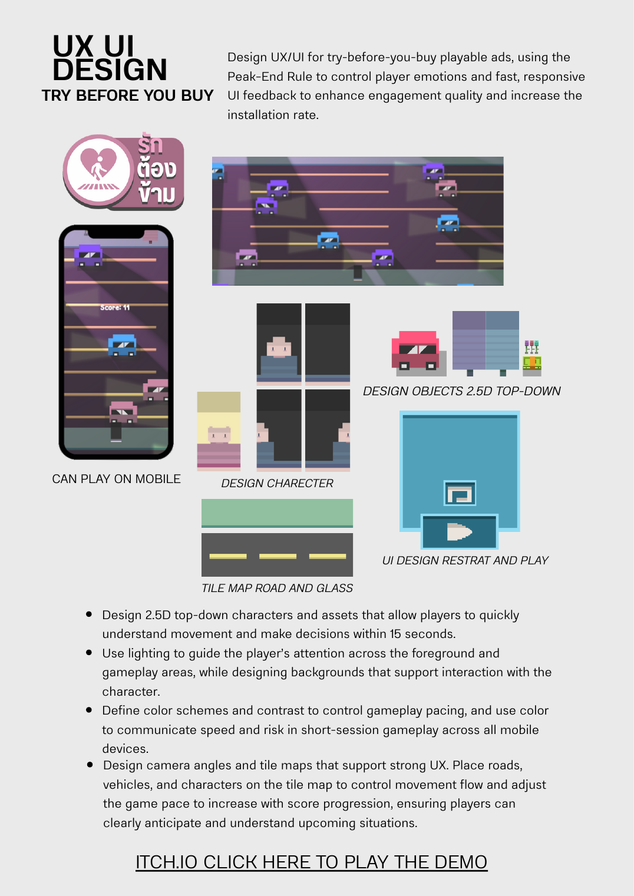
Ender Lilies — UI Redesign StudyEnder Lilies — กรณีศึกษาการรีดีไซน์ UI
Visual hierarchy, transparency tuning, and stylistic matching.ลำดับชั้นของภาพ การปรับความโปร่งใส และการคุมสไตล์ภาพ
Recreated and refined UI components based on the Ender Lilies reference. Carefully adjusted lighting, shadows, and panel transparency so the interface feels fully integrated into the game's dark fantasy atmosphere without compromising usability or readability.
สร้างและปรับปรุง UI Components โดยอ้างอิงจากเกม Ender Lilies ปรับทอนแสง เงา และความโปร่งใสของแผงเมนูอย่างละเอียด เพื่อให้อินเทอร์เฟซกลมกลืนกับบรรยากาศดาร์กแฟนตาซีของเกม โดยไม่เสียเรื่องการอ่านและใช้งานง่าย
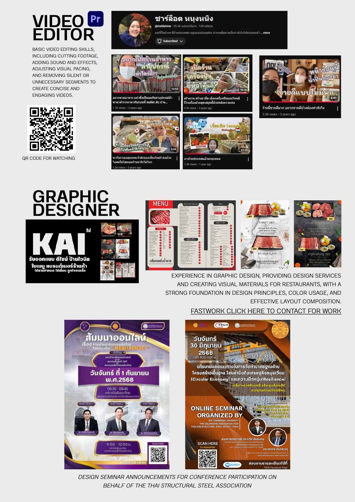
Video Editing & Commercial Graphic Designการตัดต่อวิดีโอและกราฟิกเชิงพาณิชย์
Pacing, layout composition, and branding materials.จังหวะการเล่าเรื่อง การจัดเลย์เอาต์ และสื่อสร้างแบรนด์
Edited videos for a YouTube channel, mastering visual pacing, removing dead air, and integrating sound/effects. Delivered graphic design services for restaurants and associations, producing engaging vinyl banners, structured menus, and conference seminar announcements.
ตัดต่อวิดีโอช่อง YouTube โดยคุมจังหวะภาพ ตัดช่วงเดดแอร์ และผสานเสียงเอฟเฟกต์ ให้บริการออกแบบกราฟิกสำหรับร้านอาหารและสมาคม ผลิตป้ายไวนิลดึงดูดสายตา เมนูที่จัดโครงสร้างชัดเจน และโปสเตอร์สัมมนาทางวิชาการ
AI Animation Production Pipelineกระบวนการผลิตแอนิเมชันด้วย AI
Pre-production, prompt engineering, and compositing.พรีโปรดักชัน การเขียนพรอมต์ และการคอมโพสิต
End-to-end capability in generating AI-driven animations. The workflow spans pre-animation (concept, script, storyboard design), generation (prompt engineering, motion consistency control), and post-production (compositing, VFX, and final editing).
ความสามารถเต็มรูปแบบในการสร้างแอนิเมชันด้วย AI กระบวนการครอบคลุมตั้งแต่พรีโปรดักชัน (แนวคิด สคริปต์ สตอรีบอร์ด) การเจนภาพ (การเขียนพรอมต์ คุมความต่อเนื่อง) และโพสต์โปรดักชัน (คอมโพสิต เอฟเฟกต์ภาพ และการตัดต่อไฟนอล)
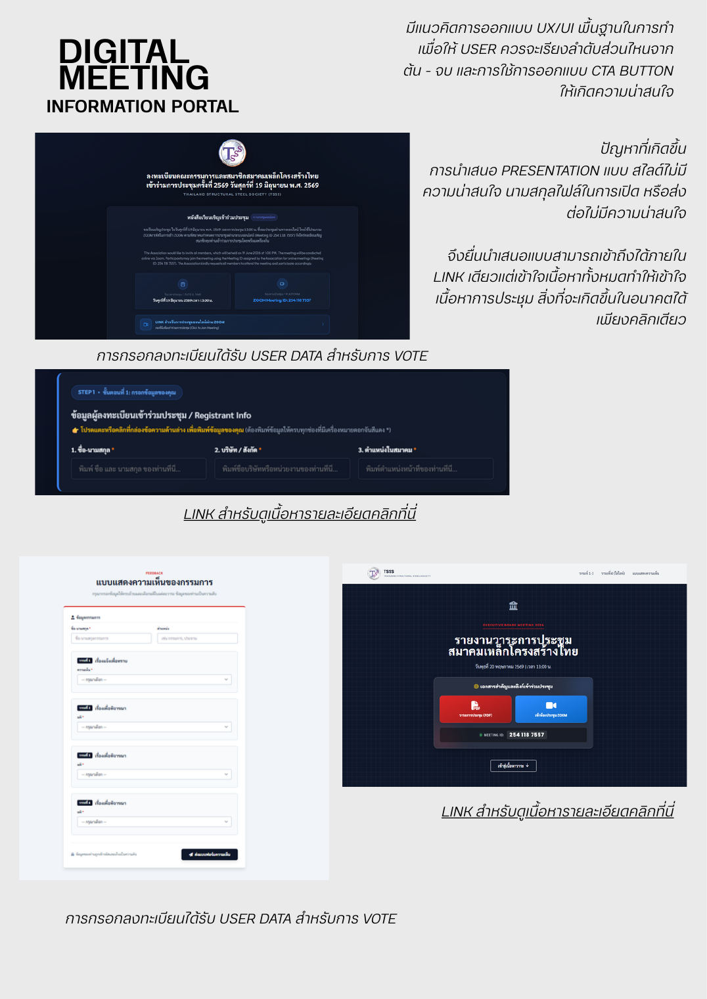
Registration Systems & Member Dataระบบลงทะเบียนและข้อมูลสมาชิก
Workflow optimization, online forms, and data accuracy.การปรับกระบวนการทำงาน ฟอร์มออนไลน์ และความแม่นยำ
Migrated manual, paper-based registration into a real-time online flow. Designed a systematic process (link → confirm → verify → database → email) for seminars and corporate memberships, allowing staff to analyze target groups and maintain official-ready records.
ย้ายการลงทะเบียนแบบแมนนวลด้วยกระดาษสู่ระบบออนไลน์เรียลไทม์ ออกแบบกระบวนการเป็นระบบ (ลิงก์ → ยืนยัน → ตรวจสอบ → ฐานข้อมูล → อีเมล) สำหรับงานสัมมนาและสมาชิกนิติบุคคล ช่วยให้เจ้าหน้าที่วิเคราะห์กลุ่มเป้าหมายและจัดเก็บข้อมูลได้อย่างถูกต้อง
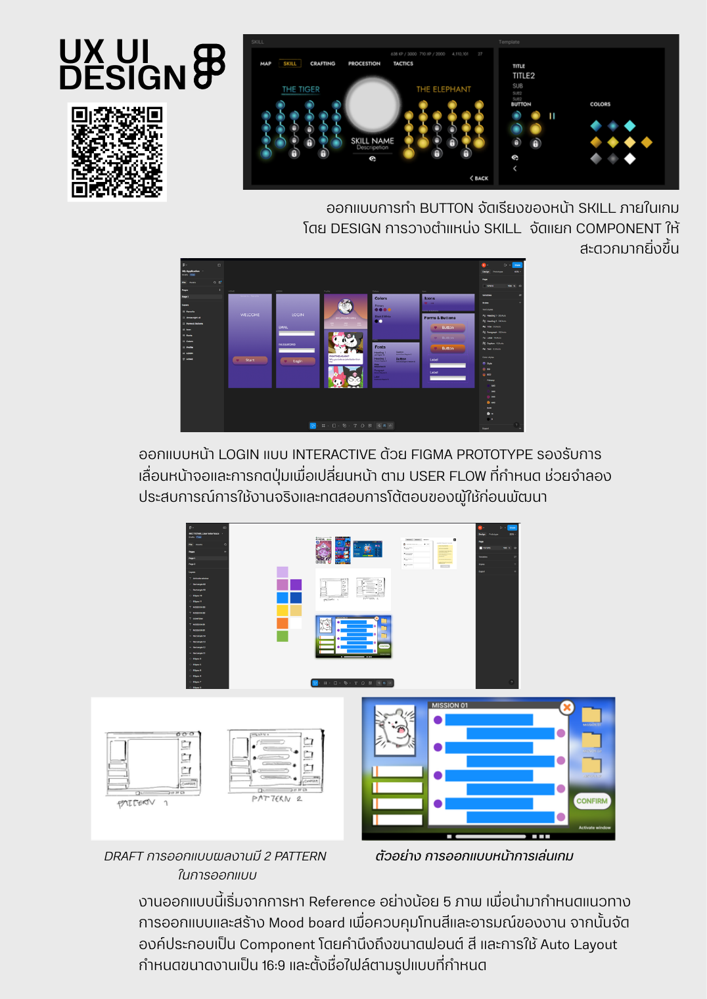
International Study Visit Operationsบริหารจัดการงานศึกษาดูงานต่างประเทศ
Cross-border coordination, logistics planning, and reporting.การประสานงานข้ามประเทศ การวางแผนโลจิสติกส์ และทำรายงาน
Managed operations for an industrial study visit on steel structures in Vietnam for 15 participants. Handled end-to-end logistics: planning the trip, tracking participant data, managing financial/registration documents, coordinating with foreign companies, and producing the final report.
จัดการดำเนินงานโครงการศึกษาดูงานโครงสร้างเหล็กในเวียดนามสำหรับ 15 ท่าน ดูแลโลจิสติกส์ตั้งแต่ต้นจนจบ: วางแผนการเดินทาง ติดตามข้อมูล จัดทำเอกสารลงทะเบียน/การเงิน ประสานงานกับบริษัทต่างประเทศ และทำรายงานสรุป
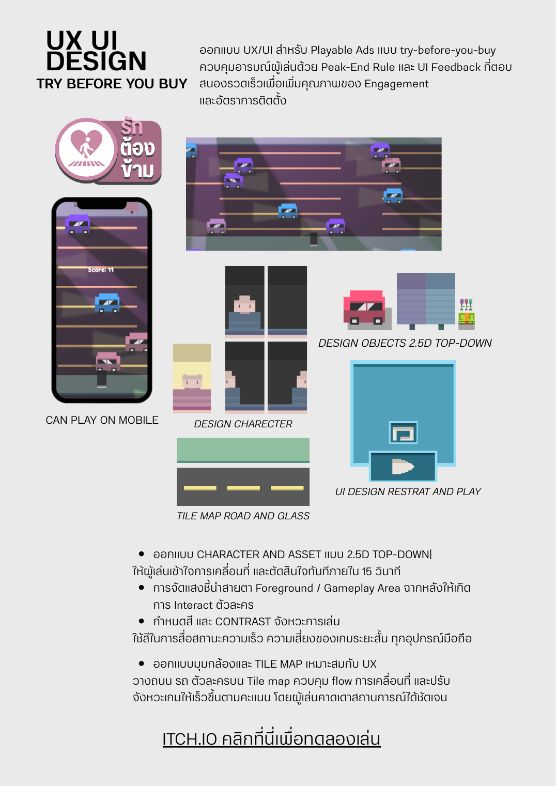
Corporate Sponsorship & Event Managementบริหารสปอนเซอร์และการจัดงานอีเวนต์
Sponsor relations, database tracking, and on-site logistics.ความสัมพันธ์สปอนเซอร์ การติดตามฐานข้อมูล และโลจิสติกส์หน้างาน
Managed a corporate golf tournament sponsorship program to build business relations. Created and tracked sponsor databases, coordinated seamlessly with the golf course venue, handled financial documentation, and ensured all PR materials and on-site signage were delivered.
บริหารโครงการสปอนเซอร์การแข่งขันกอล์ฟเพื่อสร้างความสัมพันธ์ทางธุรกิจ จัดทำและติดตามฐานข้อมูลผู้สนับสนุน ประสานงานกับสนามกอล์ฟอย่างราบรื่น จัดการเอกสารการเงิน และดูแลสื่อประชาสัมพันธ์รวมถึงป้ายหน้างานให้พร้อม
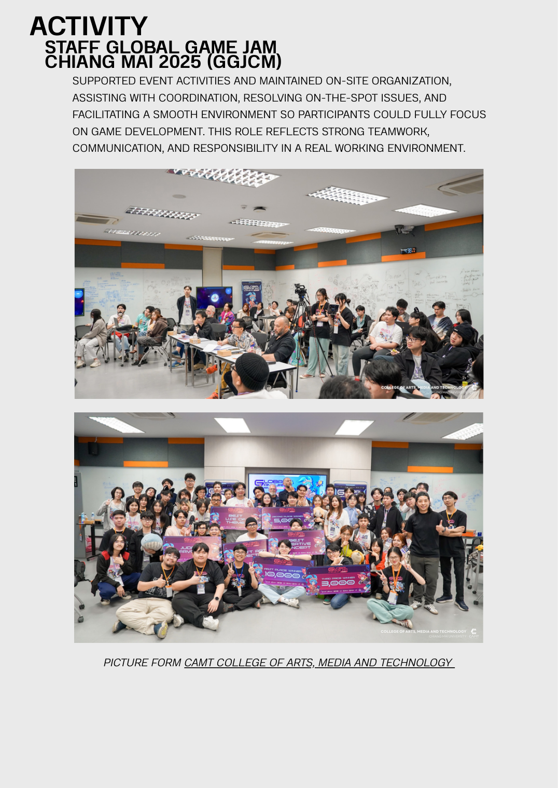
Global Game Jam 2025 On-Site Coordinationประสานงานหน้างาน Global Game Jam 2025
Crisis management, facilitation, and teamwork.การจัดการภาวะวิกฤต การอำนวยความสะดวก และการทำงานเป็นทีม
Acted as core staff for GGJCM 2025, maintaining on-site organization and resolving ad-hoc issues. Facilitated a smooth environment so game developers could focus entirely on creation, demonstrating strong responsibility and communication in high-pressure situations.
ทำหน้าที่สตาฟหลักในงาน GGJCM 2025 ดูแลความเรียบร้อยหน้างานและแก้ปัญหาเฉพาะหน้า อำนวยความสะดวกให้ผู้พัฒนาเกมโฟกัสกับการสร้างสรรค์ได้อย่างเต็มที่ แสดงถึงความรับผิดชอบและการสื่อสารที่ดีในสถานการณ์กดดัน